Published On - 11:02:46 AM CDT November 04, 2022 | Markdown available here
Over the past couple of years I have gotten back into reading after a long hiatus (we’re talking 10-12 years), and have been putting off writing reviews for the books I’ve read so far this year. Well the procrastination stops here. six months into the year. These are reviews for the 18 books I have read so far!
I’m going to employ a chaotic and nonsensical rating system to go along with my reviews, where instead of giving ratings on a five-star scale it will be given on an arbitrarily large scale that is somehow related to the book itself. I do this as a way to keep the ratings fun for me and possibly further entice you to read the books.
Before we start, a quick note: I use a pretty cool app called The Story Graph to track my reading. If you enjoy looking at useless data at all I highly recommend checking it out because they keep all kinds of interesting info from the genres you read most to the number of pages/books read per month! That’s all :)
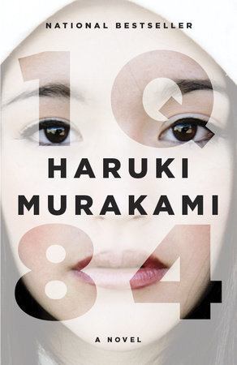
1Q84 was the first book I read this year and I think it really helped me start off on the right foot! It is quite long, which I wasn’t prepared for because I bought it online without looking at the page count. but definitely worth it! The story alternates between following two characters, Tengo and Aomame, as they navigate the boundary between the world they know and a world where two foot tall people climb out of goat’s mouths and the moon has a lopsided, green twin. Bear with me if that sounds crazy. It is! And that is one of the great things about this book. Even with all of the magical realism elements it brings to the table, it finds a way to keep the reader grounded in the character’s relationships with one another and weaves each of the separate storylines seamlessly into one another.
Needless to say, I give 1Q84 by Haruki Murakami 34 lopsided green moons out of 37.
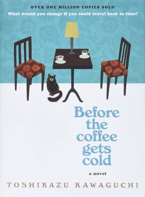
This was a great book to follow up 1Q84 with because, while it still fits in a similar genre of magical realism, it’s got a much simpler premise and is less than a third of the length! Before the Coffee Gets Cold tells the stories of several individuals who decide to travel back in time from Cafe Funiculi Funicula. The catch is (as the title so boldly spoils) they can only remain in the past for as long as their coffee stays warm. It’s a bit more nuanced than that but I’ll leave it as an exercise to the reader to find out more.
I’ve always been a sucker for stories that seem to stand on their own and then begin to intertwine as the novel goes on, and this book is a great example of that. It should be illegal for a book to make you feel the range of emotions that this one does over the course of four short stories!
There’s already a sequel out and a third book is going to be released in November 2022, and I plan on getting around to them both eventually!
I give Before the Coffee Gets Cold by Toshikazu Kawaguchi 8 coffee cups out of 9.
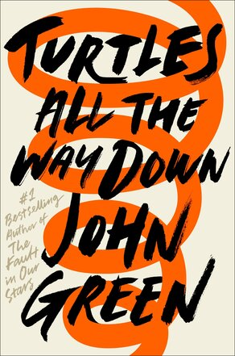
I don’t typically enjoy the young-adult genre of novel for myself, but I have to admit that John Green seems to know what he’s doing. I didn’t love everything but I think this is an important novel because of the message it gets across about OCD and mental illness and how difficult and utterly individual the experience of it is for everyone. Really well done and I can tell it means a lot to him as well.
I give Turtles All the Way Down by John Green 8 tuatara out of 13.
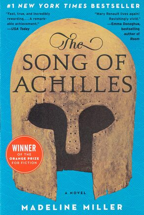
Retellings of Greek mythology seem to generally follow a similar focus, making them feel repetitive and easy to mindlessly consume without ever really engaging with the story or characters. This was NOTHING like that! The Song of Achilles occurs around the context of the Trojan War, but to say that it is simply a retelling of the stories from the Iliad is an understatement. The story focuses on the Patroclus and his relationship with Achilles, as well as the reluctant acceptance of the hero’s journey and all of the consequences that come with choosing that path.
I think this is one of the best books I’ve read in a while and it deserves all of the hype!
I give The Song of Achilles by Madeline Miller 24 reluctant heroes out of 25.
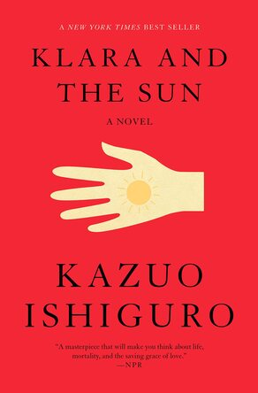
Klara and the Sun is, at it’s core, about finding a place where you belong and looking after your family. It’s told from the point of view of an artificial intelligence who’s purpose is to be a best friend to the child who’s family purchases them. This raises a lot of the common ethical questions that get brought up when you think about near-human level AI and the ending left me thinking hard about what it means to be, in the theoretical sense. I appreciate the way Ishiguiro writes a sci-fi/speculative fiction that feels much more like a story of self-discovery and family.
I give Klara and the Sun by Kazuo Ishiguiro 16 artificial friends out of 16.
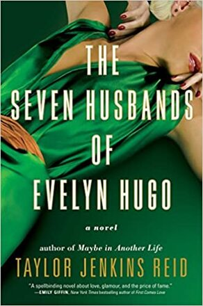
I read this without really knowing much about it, aside from the fact that it would be about this woman Evelyn and her many husbands. Told as a story to a reporter by Evelyn Hugo, a legendary movie star, it follows the side of fame that isn’t shown on the screen or online. We follow her career as she goes from nothing to everything in terms of achievement and wealth, and watch the ups and downs she feels as a result of the sacrifices she makes in order to stay ahead in Hollywood. I think this is an interesting look into the dark side of fame, especially as experienced by a woman in the mid-1900s Hollywood. On top of this, it explores the different shades of love and feeling that individuals can have for one another over the course of a relationship.
I give The Seven Husbands of Evelyn Hugo by Taylor Jenkins Reid 6 husbands out of 7.
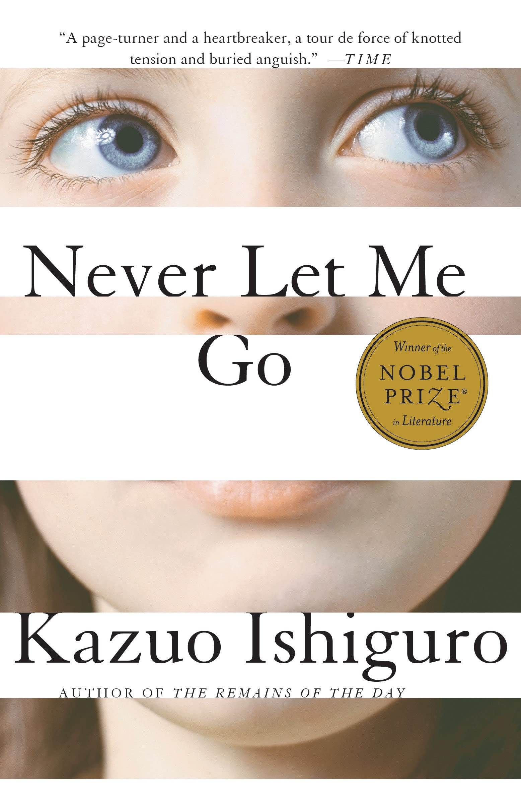
I think Never Let Me Go explores the interesting concept of the education of youth. Namely the idea that an education system can knowingly omit important information from a curriculum in order to “protect” it’s students from the truth, even though they have a right to know. The story follows a group of friends as they grow up in a boarding school, basically cut off from the outside world. The reader watches as they grow and learn that they are actually quite different than other people in the world, and that their lives are already mapped out from the moment they are born.
This plays with the idea that not telling someone something will somehow shield them from being hurt by the truth, when in reality it often only makes the impact of the truth hit even harder, and that’s pretty devastating.
I give Never Let Me Go by Kazuo Ishiguro 42 Judy Bridgewater cassette tapes out of 56.
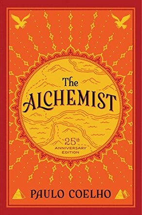
After being emotionally torn to shreds by books 4 - 7 of the year, it was really nice to read The Alchemist, which is an incredibly hopeful story about following your dreams and believing in yourself even when you’re not sure you can achieve your goals on your own. The famous line from this novel being: “when you want something, all the universe conspires in helping you achieve it.” This is a beautiful idea and the entire novel is equally as beautiful. Whether or not you subscribe to this idea, it’s worth the read to think simply about what your dreams are and how badly you want to achieve them.
I give The Alchemist by Paulo Coelho 60 sheep out of 60.
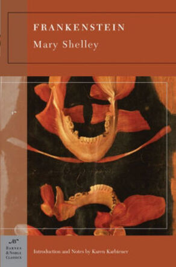
We leave the warm happy feelings left by The Alchemist and dive head-first back into the original sci-fi/horror novel! I went into Frankenstein expecting to read the story I was familiar with from pop culture and Halloween decorations, but ended up with a really heart-breaking tale of a misunderstood creature who just wants to be given a purpose in life. It’s absolutely crushing to see the creature long so badly for a place in the world but be denied because of his differences. It says a lot about society and the acceptance of those who are different from ourselves, and while we’ve obviously come a long way since then, we can always improve.
I give Frankenstein by Mary Shelley 1818 mad scientists out of 2006.
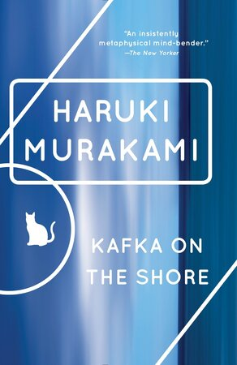
This was the third Murakami book I’ve read (along with After Dark and 1Q84) and I really enjoy his writing style. The story follows a boy who runs away from home, and an old man who can talk to cats. Like 1Q84 he weaves the two stories of the two main characters together very well in a fever dream of fantastical scenes and murakami-esque style.
I don’t really have more words that describe this book, but it’s worth the read.
I give Kafka on the Shore by Haruki Murakami 10 talking cats out of 12.
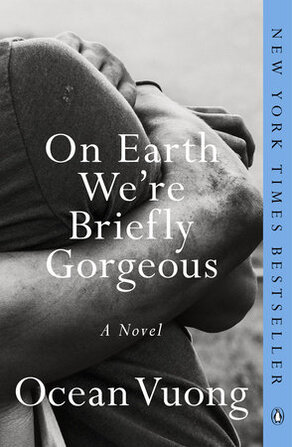
This is one of the most beautifully written novels I’ve ever read. It reads like poetry (makes sense, given the author is a poet) which makes everything so much more emotionally charged and expresses the emotions of the characters in a way that normal prose can’t.
This book is written in the form of a letter from a son to his mother who is illiterate, meaning that from the moment he writes it, he knows it will never be read. And I’m not sure if that gives the work a stronger or weaker impact, but it’s open for interpretation.
I give On Earth We’re Briefly Gorgeous by Ocean Vuong 15 little dogs out of 18.
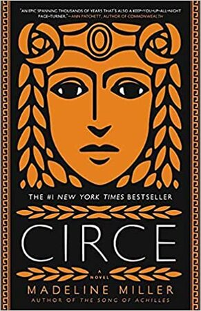
Another retelling of Greek mythology. This centers on the traditionally marginalized character of Circe. I think Madeline Miller does a great thing here putting female characters at the forefront of this story, and at it’s heart it’s really the story of someone who is underestimated at every turn and still manages to rise up and achieve great things.
That said, it is interesting to see Circe go from being unsure of herself, to become a force of nature and know she’s extremely powerful, just to be brought back to her knees by the desire to connect with others, which is really all that any of us want anyways…
I give Circe by Madeline Miller 5 scylla heads out of 6.
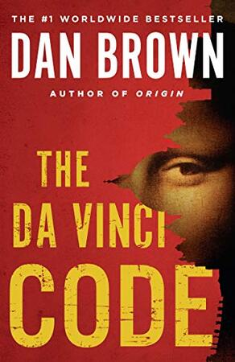
Not really much to say here… This is your classic action/adventure/mystery/thriller. It’s a fast paced read and keeps things interesting the entire time, so it’s a fun read but there isn’t much going for it on a level deeper than that. I’d say that all-in-all it’s a good time though.
I give The Da Vinci Code by Dan Brown 2 priceless paintings out of 4.
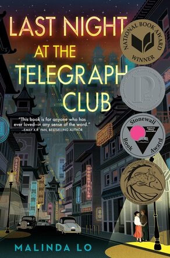
I think this is an expertly crafted story to describe the challenges of being in-between two worlds. The main character struggles with this division between an “Americanized” way of living and being the “good daughter” that she knows her parents deserve according to their cultural norms. This is a really common issue that people everywhere struggle with, but the way it is told through the lens of a 1950s, first-love/coming-of-age story makes it even more impactful. I couldn’t put the book down and when it was over I wasn’t ready to finish reading!
If you read any book on this list I’d recommend it be this one.
I give Last Night at the Telegraph Club by Malinda Lo 22 ginger ice creams out of 22.
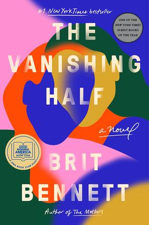
With this book, I began my slight downtick in quality of novel. I had heard a lot of great things about this one, but it didn’t live up to expectations at all. I found a lot of the big moments in the story very predictable, and it seemed like the author was beating you over the head with the points they were trying to get across. They are important points, don’t get me wrong, but hammering the reader over the head with it doesn’t make it more impactful, it just frustrates them (or at least me).
I think there was a lot of potential in this premise and I’m disappointed that it turned out the way that it did.
I give The Vanishing Half by Brit Bennett 3 estranged siblings out of 9.
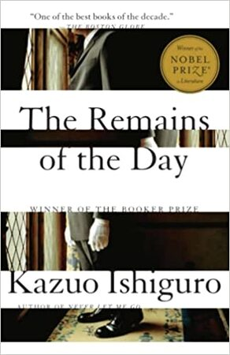
I really enjoyed both of the other Ishiguro books I read this year, so I thought I should give his Nobel prize winning book a read. This book is incredibly sad when looked at from the perspective of someone at the beginning of his career, because the novel recounts the memories of a butler who reflects on his long career and all that he’s accomplished.
I just felt regret for the main character. Regret that he didn’t take more time to do more with his life, regret that he didn’t spend time with his loved ones when he had the chance. But the story is told from the opposite perspective of someone who believes they have achieved their purpose in live, to serve an honorable gentleman.
That being said, I did find this book to just sort of drag on at times, which may be intentional as it reflects the mundaneness of the main character’s life. Either way it was frustrating, but I can at least appreciate the latter so I will give Ishiguro the benefit of the doubt!
I give The Remains of the Day by Kazuo Ishiguro 12 butlers out of 26.
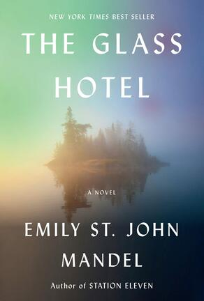
I wasn’t sure what to expect going into this book but the summary blurb on the cover made me much more excited than I was when I finished. That’s not to say it was not a good book, just that it was over-hyped in my mind. I think this was very well written and poses some really interesting questions about morality and whether or not you can know something and feign ignorance in order to sidestep the (sometimes indirect) moral implications of your actions.
There are several jumps in time, but the book will occasionally flash back to a different character’s earlier storyline without warning, and it just breaks the flow of the story at times because I find myself flipping back through the pages to see what I missed.
I give The Glass Hotel by Emily St. John Mandel 13 container ships out of 20.
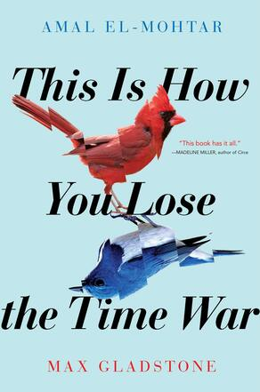
I’ve never read a co-authored piece of fiction before, but I think if there’s any way to pull it off it’s like this. The story is written as an exchange of letters between two enemy agents across space and time. You get to feel their journey from adversaries with mutual respect for one another to a Romeo and Juliet star-crossed lovers scenario. Reading the letters between the two makes for a very intimate piece of art that is somehow both poetic and extremely casual at the same time. By the end, I almost felt like I was reading someone’s private letters to a loved one, in the best way possible.
It’s got action, it’s got time-travel adventure, it’s got romantic tension between the technological singularity and a sentient plant (perhaps an oversimplification). And not to mention the super sweet cover art!
I give This is How You Lose the Time War by Amal El-Mohtar and Max Gladstone 11 hidden letters out of 14.
So far this year I’ve had pretty good luck with the books I’ve read. I haven’t read anything that has been objectively terrible nor anything that I’ve had to burn after reading, so I’ll say it’s been a successful first six months. Enjoy your book-reading and I’ll give another list of reviews in December.
Griffin